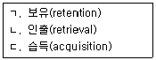
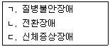
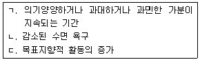
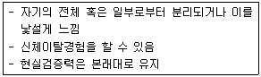
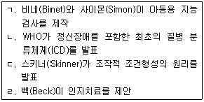
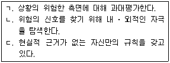
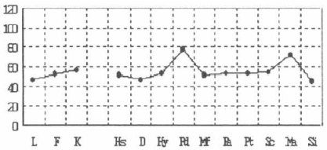
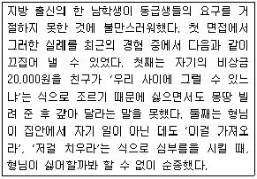
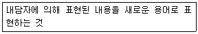

1과목: 심리학개론
1. 실험법에 관한 설명으로 틀린 것은?
2. 동조에 관한 설명으로 옳은 것은?
3. 초자아에 대한 설명으로 틀린 것은?
4. 싫어하는 사람을 과도하게 친절하게 대하는 것은 어떤 방어기제인가?
5. 여러 상이한 연령에 속하는 사람들로부터 동시에 어떤 특성에 대한 자료를 얻고, 그 결과를 연령 간 비교하여 발달적 변화과정을 추론하는 연구방법은?
6. 잔소리하는 어머니로부터 벗어나기 위해 집 밖에서 머무르는 시간이 증가하는 것은 조작적 조건형성에서 무엇에 해당되는가?
7. 실험법과 조사법의 가장 근본적인 차이점은?
8. 성격 5요인 이론의 구성요소에 해당하는 것으로만 바르게 나열한 것은?
9. 자신과 타인의 휴대폰 소리를 구별하거나 식용버섯과 독버섯을 구별하는 것은?
10. 기억 단계를 바르게 나열한 것은?

11. 검사의 내용이 측정하려는 속성과 일치하는지를 논리적으로 분석 ‧ 검토하여 결정하는 타당도는?
12. 집단사고가 일어나는 상황과 가장 거리가 먼 것은?
13. 성격이론가에 관한 설명으로 틀린 것은?
14. 단기기억의 용량은?
15. 관찰법에 관한 설명으로 틀린 것은?
16. 개나리나 장미가 필 때는 그렇지 않고 유독 진달래가 필 때만 콧물이 나는 상황의 경우, 코감기의 원인이 진달래라고 결론을 내리는 것은?
17. 나중에 학습한 정보가 먼저 학습한 정보를 방해하여 회상을 어렵게 하는 현상은?
18. 한 번 도박에 빠지면 그만두기 어려운 이유를 학습원리로 가장 적절하게 설명한 것은?
19. A씨의 아이는 항상 우유를 보고 물이라고 이야기 한다. Piaget에 따르면 A씨가 단어를 바로 잡아 준 후 아이의 우유에 대한 도식을 변환시키려면 무엇을 해야 하는가?
20. 정상분포에 대한 설명으로 틀린 것은?
2과목: 이상심리학
21. 조현병의 음성증상이 아닌 것은?
22. DSM-5 신체증상 및 관련 장애에 속하는 장애를 모두 고른 것은?

23. 우울증의 원인에 관한 설명으로 틀린 것은?
24. 조증 삽화와 경조증 삽화의 공통점을 모두 고른 것은?

25. 신경성 식욕부진증에 관한 설명으로 틀린 것은?
26. 조현병에 관한 설명으로 틀린 것은?
27. 파괴적, 충동조절 및 품행장애에 해당하지 않는 장애는?
28. 편집성 성격장애의 행동 특성으로 가장 적합한 것은?
29. 물질사용장애에 관한 설명으로 틀린 것은?
30. 성도착장애(paraphilias)에 관한 설명으로 틀린 것은?
31. 다음의 특징을 가진 DSM-5의 장애는?

32. 다음 사건이 일어난 순서대로 바르게 나열한 것은?

33. DSM-5에서 조현성 성격장애의 특징이 아닌 것은?
34. B군 성격장애에 해당하지 않는 것은?
35. 급성 스트레스장애와 외상후스트레스 장애의 감별진단 기준으로 가장 중요한 것은?
36. 불안장애의 인지 특성을 모두 고른 것은?

37. 공황장애를 설명하는 인지적 관점에 의하면, 공황발작을 초래하는 핵심적 요인은?
38. 정신분석적 입장에서 강박장애와 밀접한 관련이 있는 방어기제가 아닌 것은?
39. 알츠하이머병에 관한 설명으로 틀린 것은?
40. 품행장애의 DSM-5 진단기준이 아닌 것은?
3과목: 심리검사
41. 웩슬러 지능검사 소검사를 범주화하는데 있어 ‘획득된 지식’ 요인에 속하는 소검사가 아닌 것은?
42. 웩슬러 지능검사를 실시한 결과는 지수점수(또는 지표점수)가 산출된다. 각 지수점수(지표점수)의 평균과 표준편차는?
43. 신경심리검사의 해석에 관한 설명으로 옳은 것은?
44. BGT(Bender Gestalt Test)의 장점에 관한 설명으로 틀린 것은?
45. 두정엽의 병변과 가장 관련이 있는 장애는?
46. 다음 MMPI 프로파일에 대한 해석으로 적합하지 않은 것은?

47. 기억장애를 보이고 있는 환자에게 기억 및 학습능력을 평가하는데 가장 적합한 것은?
48. 지능검사 시행에 관한 설명으로 옳은 것은?
49. 심리검사의 시행에 관한 설명으로 옳은 것은?
50. 다음 아동용 심리검사 중 실시 목적이 나머지 셋과 다른 것은?
51. TAT(주제통각검사)에 관한 설명으로 틀린 것은?
52. 모집단에서 규준집단을 표집하는 방법과 가장 거리가 먼 것은?
53. 집단용 지능검사의 특징으로 옳은 것은?
54. MMPI-2의 타당도 척도에 해당되지 않는 것은?
55. K-VMI-6(시각-운동 통합 검사)에 관한 설명으로 가장 적합한 것은?
56. 표집 시 남녀 비율을 정해놓고 표집 해야 하는 경우에 가장 적합한 방법은?
57. MMPI-2의 타당도 척도 중 비전형성을 측정하는 척도에서 증상타당성을 의미하는 척도는?
58. 적성검사에 대한 설명으로 틀린 것은?
59. 다음 중 지능에 관한 일반적인 정의와 가장 거리가 먼 것은?
60. MMPI 타당도 척도 중 L과 K 척도는 T점수로 50에서 60사이 이고 F척도는 70이상인 점수를 얻은 사람의 특징으로 적합한 것은?
4과목: 임상심리학
61. 인지치료에 대한 설명으로 틀린 것은?
62. 치료자가 치료 초기에 rapport를 형성하기 위한 행동으로 바람직하지 않은 것은?
63. 생명유지에 필수적인 기능에서 고차원적 인지 기능으로 발달하는 뇌의 발달 단계를 순서대로 나열한 것은?
64. 치료관계에서 얻은 내담자의 정보에 대한 비밀 보장의 예외적인 경우에 해당하지 않는 것은?
65. 신경심리학적 기능을 연구하는 방법 중 비침습적인 방법에 해당하는 것은?
66. 정신상태검사(mental status examination) 면접에서 환자를 통해 평가하는 항목이 아닌 것은?
67. 행동이 보상을 받아 행동의 빈도가 증가하는 원리에 해당되지 않는 것은?
68. 인간중심치료에서 자기와 경험 간의 일치를 촉진 시키고, 자기실현을 하도록 치료자가 지녀야 할 특성과 가장 거리가 먼 것은?
69. 암, 당뇨 등과 같은 질병을 진단받은 환자들을 위한 효과적인 집단개입으로 가장 적합한 것은?
70. 심리평가에 관한 설명과 가장 거리가 먼 것은?
71. 환자가 처방한 대로 약을 잘 복용하고, 의사의 치료적 권고를 준수하게 하기 위한 가장 적절한 방법은?
72. 알코올중독 환자에게 술을 마시면 구토를 유발하는 약을 투약하여 치료하는 기법은?
73. 임상심리학자가 활동할 수 있는 새로운 영역과 가장 거리가 먼 것은?
74. 임상심리학자의 교육수련과 관련된 설명으로 적절하지 않은 것은?
75. 심리치료 과정에서 저항이 일어나는 일반적인 이유와 가장 거리가 먼 것은?
76. Pennsylvania 대학교에 첫 심리진료소를 개설하고 임상심리학의 탄생에 크게 기여한 학자는?
77. MMPI-2에서 척도와 그 척도가 측정하는 바가 잘못 짝지어진 것은?
78. 행동평가의 관한 설명으로 가장 적합한 것은?
79. 역할시연과 가장 관련성이 높은 행동관찰 방법은?
80. 다음 중 유관학습의 가장 적합한 예는?
5과목: 심리상담
81. Bordin이 제시한 작업동맹(working alliance)의 3가지 측면을 바르게 짝지은 것은?
82. 교류분석에서 치료의 바람직한 목표인 치유의 4단계에 해당되지 않는 것은?
83. 학교진로상담의 기본원리로 고려해야 할 사항이 아닌 것은?
84. 다음 사례에 가장 적합한 개입방법은?

85. 인지행동적 상담이론의 특징과 가장 거리가 먼 것은?
86. 사별 경험이 있거나 자살을 시도하려는 아동의 상담에 관한 설명으로 틀린 것은?
87. 장기간 사용 중이던 약물을 얼마 동안 사용하지 않았을 때 심리적으로 초조하고 불안함을 느낄 뿐 아니라 약물에 대한 열망과 메스꺼움 등의 신체적인 불쾌감을 경험하는 것은?
88. 다음은 무엇에 대한 설명인가?

89. 아동청소년의 폭력비행을 상담할 때 부모를 통해 개입하는 방법으로 가장 적합한 것은?
90. Rogers의 인간중심 상담이론의 기본 명제에 관한 설명으로 틀린 것은?
91. 성피해자에 대한 상담의 초기 단계에서 상담자가 유의해야 할 사항으로 옳은 것은?
92. 현실치료의 근간이 되는 선택이론의 주요원칙으로 옳지 않은 것은?
93. Kitchener가 상담의 기본적인 윤리적 원리를 제시한 것으로 상담자가 내담자와 맺은 약속을 잘 지키며 믿음과 신뢰를 주는 행동을 하는 것은?
94. 효율적인 독서능력의 신장과 장기기억을 돕는 조직화 전략 SQ3R의 순서를 올바르게 나열한 것은?
95. 상담 및 심리치료의 발달역사에 관한 설명으로 옳지 않은 것은?
96. 정신분석 상담에서 말하는 불안의 종류에 해당하는 것은?
97. 상담 초기단계에서 내담자를 평가할 때 고려해야 할 사항이 아닌 것은?
98. 집단상담을 초기단계, 전환단계, 작업단계, 마무리단계로 구분할 때 전환단계의 특징이 아닌 것은?
99. 체계적 둔감법(systematic desensitization)의 기초가 되는 학습원리는?
100. 약물중독 개입모델 중 영적인 성장에 초점을 두고 자조집단을 활용하는 형식으로 진행되는 모델은?